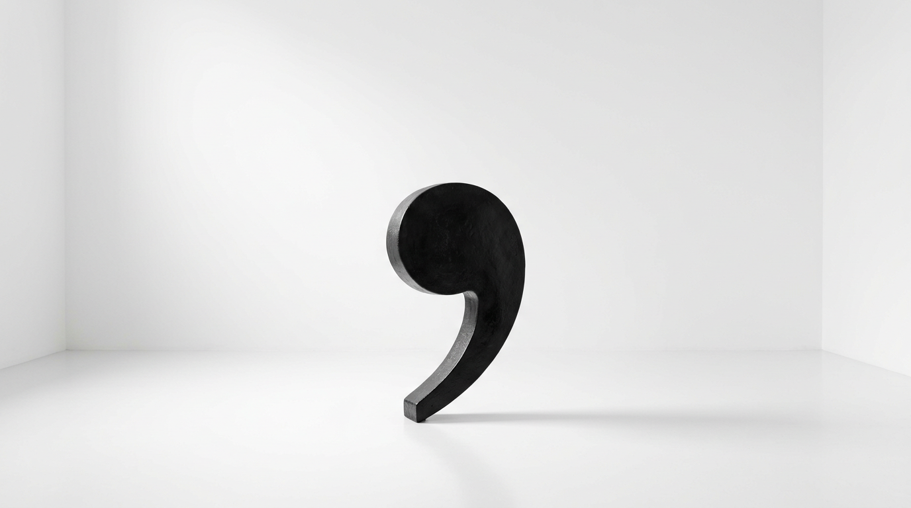

Eddie Izzard, Pavlov’s Dogs, and the Pulitzer Novel That Refuses to Stop for Breath
Hear me out, because this goes somewhere.
One of my favourite stand-up comedians is Suzy Eddie Izzard, and I can only take about forty minutes of her before I have to lie down.
That is not a complaint. That’s the machinery.
Izzard doesn’t perform bits. Bits have architecture — setup, escalation, turn, landing, breathe, next. What she does instead is a stream. One thing hooks into the next thing, which hooks into a third thing that has no business being in the same room as the first, and there’s almost no pause anywhere. One second she’s on Pavlov’s dogs and the conditioning reflex, and somehow, by a route you couldn’t retrace with a map, she’s at the checkout in a Costco.
It works like Mad Libs run by someone with no filter and a very fast brain. One adjective pulls a verb out of the dark. The verb drags an image behind it. The image suggests a historical figure who shouldn’t be there. And off it goes.
Some jokes land. Some don’t. And crucially: there’s no symmetry. No rhythm you can lean on. No architecture telling you when the next laugh is due. You’re just watching someone think at high speed with the safety off.
Which is glorious. And it is genuinely, physically frustrating.
Because compare it to Jim Gaffigan, or Lewis Black, or Marc Maron. Those are comedians you can consume for hours. Not because they’re better — because they’re built. Gaffigan gives you a rhythm you can ride. Black gives you an escalating structure that resolves. Maron gives you a confessional arc with a door at the end. Your brain knows where it is at all times.
Izzard doesn’t give you that, so you can only take a certain dose, and then you’re full, and you have to stop.
And then — this is the part that matters — about a month later you want it again. Badly. You go looking for it.
Right. So.
STOP.
What does any of this have to do with Angel Down by Daniel Kraus?
Everything. Because Angel Down is the exact same machine, in prose, at book length, and it won the 2026 Pulitzer Prize for Fiction.
The Dosage Problem, Applied to Literature
Let me establish my credentials for complaining, so you know where I’m standing.
I have read Finnegans Wake. I have read Pynchon — more than one, voluntarily. I have read Infinite Jest, footnotes and all, including the footnotes that have footnotes.
I’d put Angel Down on that spectrum. Not at the Finnegans Wake end — it’s nowhere near that hostile, and unlike Joyce, Kraus is never being difficult at you — but firmly in that family. It is one of the hardest books I’ve ever had to read, and I want to be precise about the kind of hard it is, because it is not the kind you’d guess.
It’s not obscure. It’s not allusive. You never need a companion volume. Every individual clause is perfectly clear.
It’s hard because it never stops.
What It Actually Is
The setup is deceptively simple, and once you hear it you’ll understand why the film rights went immediately.
Five American soldiers — the book is unambiguous that these are men of ill repute, not heroes — are in the Meuse-Argonne, in France, in 1918. They’re handed a grim errand: go out into No Man’s Land and mercy-kill a wounded comrade.
What they find instead is an angel, tangled in the barbed wire, apparently brought down by artillery.
And rather than report it — because they understand exactly what their commanding officer will do with a celestial being — they desert, and they try to protect her.
Our narrator is Private Cyril Bagger: a gravedigger, a con man, and a preacher’s son carrying a large amount of shame. Kraus built him deliberately compromised — a man who keeps everyone at arm’s length and has decided that isolation is the superior arrangement. The book is the story of that arrangement failing.
Because here’s the engine: five morally bankrupt men now have custody of something sacred, and greed and jealousy start eating the group from the inside. What began as protection becomes a descent. The angel doesn’t save them. The angel tests them, and the results are mixed.
The History, Because the Setting Isn’t Decoration
People skip past “World War I novel” because we’ve had a century of them. Don’t skip this one, because the specific ground Kraus chose is doing work.
The Meuse-Argonne Offensive ran from September 26 to November 11, 1918 — forty-seven days, ending on the Armistice. Over a million American soldiers took part. It was the largest operation the American Expeditionary Forces mounted in the entire war.
Over 26,000 Americans killed. Over 120,000 total casualties.
It is the deadliest campaign in American history. Not the deadliest of that war. Of American history, full stop.
And here’s the detail that reorganised my entire sense of proportion: the American military cemetery at Romagne, which serves that offensive, holds substantially more graves than the cemetery above Omaha Beach in Normandy. Everyone reading this can picture Omaha Beach. Almost nobody can picture Romagne.
So Kraus set his book in the single bloodiest thing America has ever done, in the place Americans have most thoroughly forgotten, in the forty-seven days when industrialised killing was running at full capacity and about to simply stop on a scheduled morning.
That’s not a backdrop. That’s an argument.
The Sentence, and Why It Isn’t a Gimmick

Now the thing everybody talks about.
The entire novel is one unbroken sentence. No periods. It begins mid-sentence, in the middle of a battle, and it ends on a comma. No full stop at the finish. The book declines to conclude.
And here’s what converted me from suspicion to respect: Kraus didn’t start there. He found it.
He was working out his theme — his phrase is “warfare as a self-replicating wheel”, the circularity of the thing, how it produces the conditions for its own repetition — and then decided to, in his words, “viscerally replicate it with the shape of the prose.” Prose that, as he put it, “loops back on itself and never ends.”
That’s not a stunt. That’s form and content welded at the root. The book has no ending because the argument is that this has no ending.
He’s also described the reading experience in a way I found exactly accurate: the hypnotic quality of highway tyre noise resolving into a heartbeat. Being “on the rails of something that you can’t control.” Which is, not coincidentally, a reasonable description of being a private soldier.
Now — practically. Luis’s Complaint Department would like to note that “no periods” is scarier than the reality. The book lets you breathe. There are chapters. There are sections. Kraus runs the whole thing on commas, dashes and em-dashes, and those do real load-bearing work — they’re the respiratory system. You are never lost inside an undifferentiated wall. You always know where you are; you simply never get permission to stop.
The obvious comparison — and Kraus has been compared to it repeatedly — is 1917, Sam Mendes’s film stitched to look like one continuous take. Same instinct. Remove the cuts, and the audience loses the safety of knowing that someone in an editing room decided when they were allowed to look away.
Literary precedent runs deeper than people credit, too. Stream of consciousness as we know it was substantially built by the generation that came out of this exact war — Woolf, Joyce. Kraus is not doing something novel to literature. He’s returning the technique to the event that produced it.
Why It’s Visceral in a Way I Wasn’t Ready For
Here’s my own contribution, and it’s the thing I can’t stop thinking about.
I’ve read Stephen King. I’ve read Clive Barker. I’ve read Stephen Graham Jones, and Dan Simmons’s The Terror, and a fair spread of the most deranged passages available in English.
Angel Down is the most visceral book I have ever read, and I think I know the mechanism.
Every competent writer subtracts. That’s the job as it’s taught — Orwell’s “if it is possible to cut a word out, cut it out.” You write the description, then you remove the third adjective because two is stronger, and you take out the verb that’s doing a job another verb already did. Restraint. Trust the reader. Leave the hole and let it have weight.
Kraus does the opposite, on purpose, and it’s not indulgence — it’s the form.
When he describes a soldier holding his own guts, he does not select the one perfect detail and move on. He gives you the colour, and then the texture, and then the temperature, and then the smell, and not one word for each but a small escalating pile of them, comma after comma after comma, and you cannot skim out because there is no paragraph break to skim to, and there is no period to rest on, and the sentence has your collar.
He sinks you in the muck. Deliberately. With no exit.
And that’s the argument for the whole design. In a book with periods, that passage is gratuitous — you’d cut it to three words and it would be better. In a book without periods, it’s the reader being held in place exactly as long as the soldier is. The form earns the excess. Remove the form and the excess becomes a flaw.
That is a genuinely rare thing: a stylistic choice that requires the other stylistic choice to work.
Why People Hate It, Stated Fairly
Go to Amazon and you’ll find no middle ground. People love it or they’re furious. And the furious reviews are not stupid, so let me give the strongest version rather than a straw one.
One critic, writing that the Pulitzer decision was an embarrassment, put it like this: Kraus’s “refusal to group his concepts into sentences that each convey a single idea not only obfuscates what precisely his ideas are, but it represents a rejection of clarity and meaning as such.” The result, they wrote, is “not brilliant insight but dreary muddiness,” a style that “contradicts the requirements of human communication.” And the verdict: “to call this year’s selection an example of excellence is to make a mockery of the term.”
That’s a real argument and it deserves a real answer.
The steel version of it: the sentence is the unit in which humans package a complete thought. Refusing the sentence isn’t bravery, it’s an abdication — you get to imply profundity while never committing to a claim clear enough to be wrong. Difficulty becomes camouflage. And a prize for excellence rewarding a book that opts out of the basic contract of prose sends a terrible signal about what literature is for.
My honest answer is that this is correct about most books that try this, and wrong about this one, and the difference is whether the form is load-bearing. If you could rewrite Angel Down with periods and lose nothing but novelty, the critic wins outright. You can’t. Put periods in and the visceral passages become gratuitous, the circularity argument evaporates, and the ending — a comma, an unclosed clause, war not concluding — becomes a normal last line of a normal war novel.
That said, I’ll concede the critic’s real point: this only works once. The technique is not a tool other novelists should pick up. It’s a solution to one specific problem in one specific book, and the next fifty people who try it will produce exactly the dreary muddiness they were warned about.
Why People Love It
The ones who love it don’t talk about the sentence at all, which tells you something. They talk about being held.
Kraus describes his own subject as “the devastating, mutating power of violence and how to remain human in the midst of it” — and his read on the First World War is that it’s the hinge, the point where mechanised slaughter began and technology started systematically removing human agency from the act of killing. Which makes it, uncomfortably, the most contemporary possible setting.
And the gravedigger con man at the centre is the right vehicle, because a book about remaining human needs someone who has already given up on it. Bagger’s arc is learning to care for one single being. That’s the whole redemption on offer. It is a very small door in a very large wall, and the book does not promise he gets through it.
How to Actually Read It
Practical, because nobody told me and I want to tell you.
Accept that the first 10 to 15% is a wall. Not the first half — I overstated that in my own head at the time. Call it fifty, sixty pages. You will not enjoy them. You will be irritated. You will wonder who, specifically, thought you deserved this, and you will consider quitting somewhere around the fourth page of unbroken clause.
Plow through anyway.
It’s the same deal as a prestige series where every person you trust swears it clicks at episode three. You have to front-load the investment on somebody else’s word. This is mine: it clicks, and when it clicks it stops being difficult and becomes propulsive, and the last stretch reads faster than anything with periods in it.
Two things that helped me:
Read it in longer sits, not shorter ones. This is the opposite of most hard books. The rhythm needs runway. Twenty minutes is worse than an hour. Kraus himself said he had to read back several pages at the start of each writing session to get the cadence again — the reader has the same problem, so stop starting.
And treat the Izzard rule as a feature. You are going to hit saturation. When you do, put it down, and do not feel like you failed. You come back to it the way you come back to her: about a month later, wanting the madness again, and it’s still there, and it’s still going, because it never stopped.
Where I Land
It’s relatively short — which is its own cruel joke, because it does not read short.
It is a book you have to tackle with intention. You cannot fall into it, you cannot pick at it, and you cannot read it tired. You have to decide to do it.
And I think the Pulitzer committee got it right, which I don’t always think.
There’s a film in development at Imagine Entertainment, and I have no idea how you shoot it, except that 1917 already showed everyone the answer and nobody has quite had the nerve to use it on something this ugly.
The thing I keep returning to is the last mark on the last page.
A comma.
Not a cliffhanger. Not ambiguity for its own sake. Just the mechanical fact that the wheel is still turning, and the sentence that started before you arrived is going to carry on after you put the book down — which is, I’d argue, the single most accurate thing any war novel has ever said about war.
Quick Questions From the Cheap Seats
What is Angel Down by Daniel Kraus about?
Five American soldiers in the Meuse-Argonne Offensive of 1918 are sent into No Man’s Land to mercy-kill a wounded comrade and instead find an angel tangled in barbed wire. They desert to protect her, and greed and jealousy begin to destroy the group. The narrator is Private Cyril Bagger, a gravedigger and con man.
Is Angel Down really written as one sentence?
Yes. The novel has no periods. It begins mid-sentence during a battle and ends on a comma. It does contain chapters and sections, and uses commas, dashes and em-dashes for rhythm, so it’s more navigable than “one sentence” suggests.
Why did Daniel Kraus write Angel Down without periods?
He has said his theme was warfare as a self-replicating wheel, and he wanted to “viscerally replicate it with the shape of the prose” — writing that “loops back on itself and never ends.” The form is an expression of the argument, not a stunt.
Did Angel Down win the Pulitzer Prize?
Yes — the 2026 Pulitzer Prize for Fiction. The citation explicitly praises it as “a stylistic tour-de-force” that blends allegory, magical realism and science fiction, “told in a single sentence.”
Why is Angel Down controversial?
Reader reactions split sharply over the unpunctuated style. Detractors argue it sacrifices clarity — one critic called it “a rejection of clarity and meaning as such” and said the award “makes a mockery” of the idea of excellence. Supporters argue the form is inseparable from the subject and produces an immersion conventional prose cannot.
Is Angel Down hard to read?
The first 10–15% is genuinely difficult while you adapt to the absence of full stops. After that most readers report it becomes propulsive. Longer reading sessions work considerably better than short ones, because the prose depends on accumulated rhythm.
What else has Daniel Kraus written?
He wrote Whalefall, completed George A. Romero’s unfinished novel The Living Dead, and co-wrote the novelisation of The Shape of Water with Guillermo del Toro. He has said a western is next, and that he’d like to try mystery and more nonfiction.
Rant over. Not sorry, and this time not even a little.
Go read it. Give it sixty pages before you’re allowed an opinion. Then come find me, because I need to talk to somebody about the wire,
and yes, I did that on purpose.